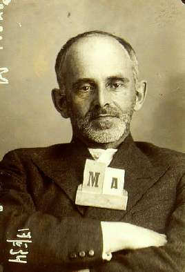

Борис Акунин
Мой календарь
В этот декабрьский день 1938 года в пересыльном лагере, в бараке № 11, умер Осип Мандельштам. В последнем письме написал: «Здоровье очень слабое. Истощен до крайности».
Поэт получил минимальный по тем жестоким временам, так называемый «травоядный» срок - «всего» пять лет. Считалось, что такой приговор дают тем, кому совсем уж нечего «впаять». В обвинительном заключении говорилось: «Медицинским освидетельствованием Мандельштам О. Э. признан личностью психопатического склада со склонностью к навязчивым мыслям и фантазированию».
Но для того, чтобы убить поэта, пяти лет не понадобилось, хватило нескольких месяцев.
Тело оттащили в штабель к другим мертвецам. Так оно пролежало до весны. Где потом закопали, никто не знает. Могилы у Осипа Мандельштама нет.
